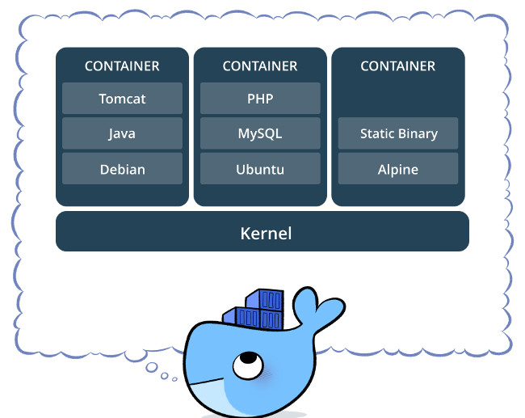
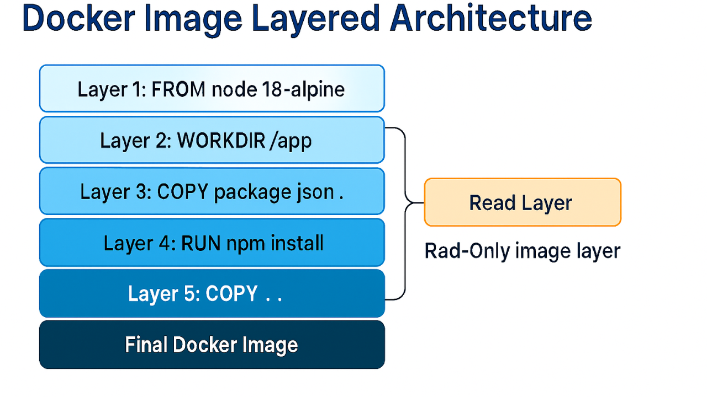
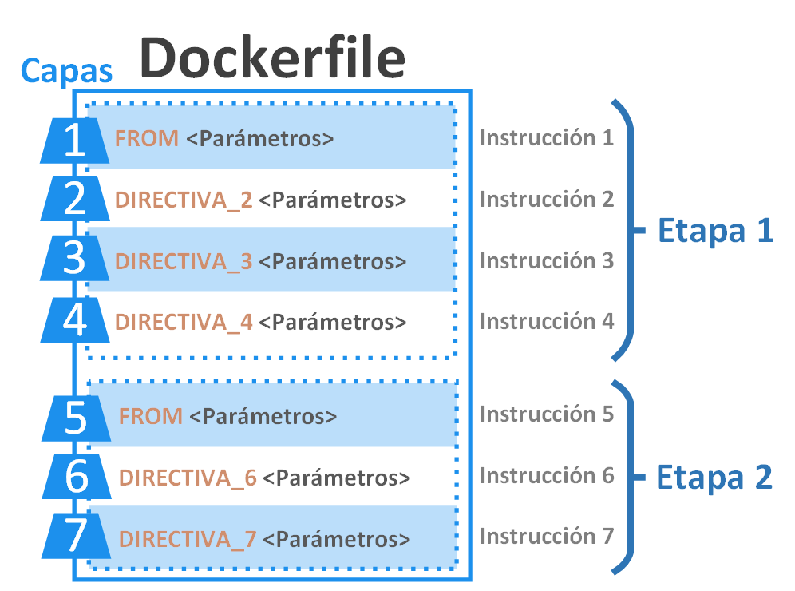
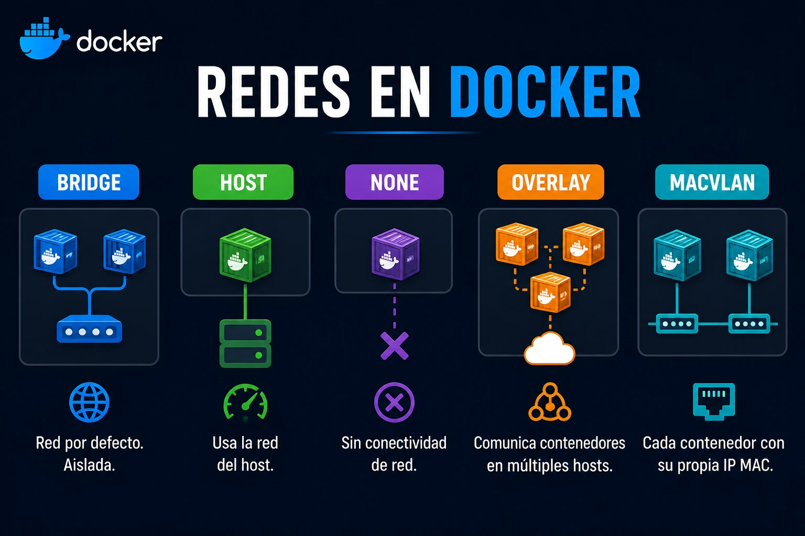
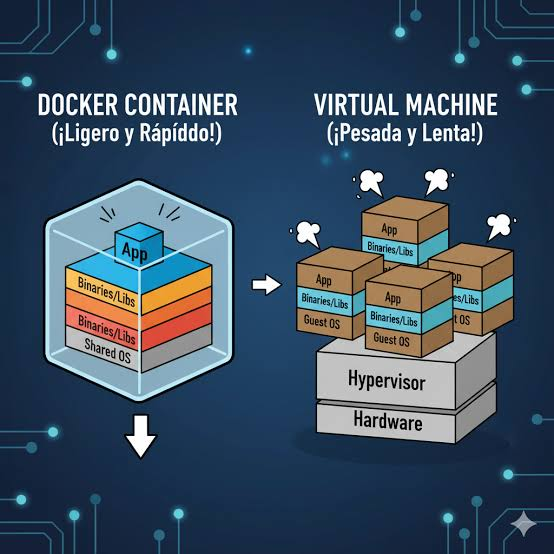

Fundamentos de Docker
Docker es una plataforma que permite crear, distribuir y ejecutar aplicaciones mediante contenedores. Para comprender su funcionamiento, es importante conocer los elementos que intervienen en la creación de imágenes, la ejecución de contenedores, el almacenamiento de datos y la comunicación entre servicios.
Contenedores
Los contenedores son entornos aislados que permiten ejecutar aplicaciones junto con los elementos necesarios para su funcionamiento, como bibliotecas, dependencias y configuraciones. Su objetivo es que una aplicación se comporte de manera consistente en diferentes equipos y entornos.
A diferencia de las máquinas virtuales, los contenedores comparten el kernel del sistema operativo anfitrión. Esto permite que generalmente utilicen menos recursos y se inicien con mayor rapidez.
Características principales
- Aislamiento: cada contenedor ejecuta sus procesos de manera independiente.
- Portabilidad: pueden ejecutarse en diferentes entornos compatibles con Docker.
- Ligereza: suelen consumir menos recursos que una máquina virtual completa.
- Escalabilidad: permiten crear varias instancias de una aplicación según las necesidades.
Ejemplo: una aplicación desarrollada con Java y conectada a MySQL puede ejecutarse utilizando contenedores, manteniendo sus dependencias y configuraciones sin instalarlas manualmente en cada equipo.

Imágenes de Docker
Una imagen de Docker es una plantilla que contiene los archivos, bibliotecas, dependencias y configuraciones necesarias para crear un contenedor. Es la base a partir de la cual se ejecuta una aplicación.
Las imágenes están organizadas en capas. Cada capa incorpora archivos o modificaciones realizadas durante su construcción. Esta estructura permite reutilizar capas existentes, reducir descargas y optimizar el almacenamiento.
Características principales
- Reutilización: una misma imagen puede utilizarse para crear múltiples contenedores.
- Inmutabilidad: una imagen no se modifica directamente; los cambios producen una nueva imagen.
- Versionamiento: pueden existir diferentes versiones de una misma imagen.
- Eficiencia: las capas compartidas evitan descargar o almacenar repetidamente los mismos elementos.
Ejemplo: una imagen de MySQL permite crear contenedores que ejecuten un servidor de base de datos sin instalar MySQL manualmente en cada equipo.

Dockerfile y Docker Hub
Dockerfile y Docker Hub cumplen funciones diferentes pero complementarias: uno permite definir cómo construir una imagen y el otro facilita almacenar y compartir imágenes.
Dockerfile
Es un archivo de texto que contiene instrucciones utilizadas para construir una imagen. En él se especifican la imagen base, los archivos que se incorporarán, las dependencias que deben instalarse y el comando predeterminado para ejecutar la aplicación.
| Instrucción | Función |
|---|---|
FROM |
Define la imagen base sobre la que se construirá la nueva imagen. |
WORKDIR |
Establece el directorio de trabajo dentro de la imagen. |
COPY |
Copia archivos o directorios al sistema de archivos de la imagen. |
RUN |
Ejecuta comandos durante el proceso de construcción. |
EXPOSE |
Documenta el puerto en el que la aplicación espera recibir conexiones. |
CMD |
Define el comando predeterminado al iniciar un contenedor. |
Docker Hub
Es un servicio de registro de imágenes que permite buscar, descargar, almacenar y compartir imágenes de Docker. Los desarrolladores pueden utilizar imágenes oficiales o publicar imágenes propias para que otros equipos las descarguen y utilicen.
Ejemplo: un desarrollador puede descargar una imagen oficial de MySQL desde Docker Hub y utilizarla como base para crear un contenedor con su base de datos.

Volúmenes y redes
Los volúmenes y las redes permiten administrar dos aspectos esenciales de las aplicaciones en contenedores: la conservación de información y la comunicación entre servicios.
Volúmenes (Volumes)
Son mecanismos de almacenamiento que permiten conservar datos fuera del ciclo de vida de un contenedor. De esta manera, la información puede mantenerse aunque el contenedor se elimine o se reemplace. Son especialmente útiles para bases de datos, archivos de usuarios y registros.
Redes (Networks)
Permiten establecer conexiones entre contenedores y otros servicios. Gracias a ellas, diferentes componentes de una aplicación pueden comunicarse sin tener que ejecutarse dentro del mismo contenedor.
| Elemento | Función principal |
|---|---|
| Volúmenes | Conservar y administrar los datos utilizados por los contenedores. |
| Redes | Permitir la comunicación entre contenedores y servicios. |
Ejemplo: una aplicación puede tener un contenedor para el backend y otro para MySQL. Ambos pueden comunicarse mediante una red de Docker, mientras que un volumen conserva los datos de la base de datos.

Contenedores vs máquinas virtuales
Los contenedores y las máquinas virtuales permiten ejecutar aplicaciones en entornos aislados, pero utilizan mecanismos diferentes. Las máquinas virtuales funcionan mediante un hipervisor y cada una ejecuta su propio sistema operativo. Los contenedores comparten el kernel del sistema anfitrión y aíslan los procesos y recursos de cada aplicación.
| Característica | Contenedores | Máquinas virtuales |
|---|---|---|
| Sistema operativo | Comparten el kernel anfitrión. | Cada máquina virtual tiene su propio sistema operativo. |
| Consumo de recursos | Generalmente menor. | Generalmente mayor. |
| Inicio | Suelen iniciar rápidamente. | Generalmente requieren más tiempo. |
| Aislamiento | Aíslan procesos y recursos. | Aislamiento a nivel de máquina virtual. |
| Uso habitual | Aplicaciones y microservicios. | Sistemas operativos y entornos completos. |
¿Cuándo utilizar cada uno?
- Contenedores: cuando se necesita desplegar aplicaciones rápidamente, aprovechar recursos y mantener entornos consistentes.
- Máquinas virtuales: cuando se requiere ejecutar sistemas operativos diferentes o disponer de un entorno de máquina completo.
